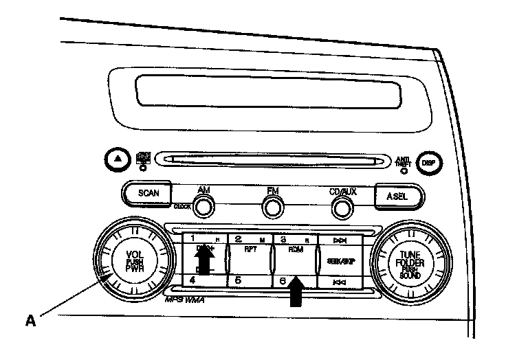
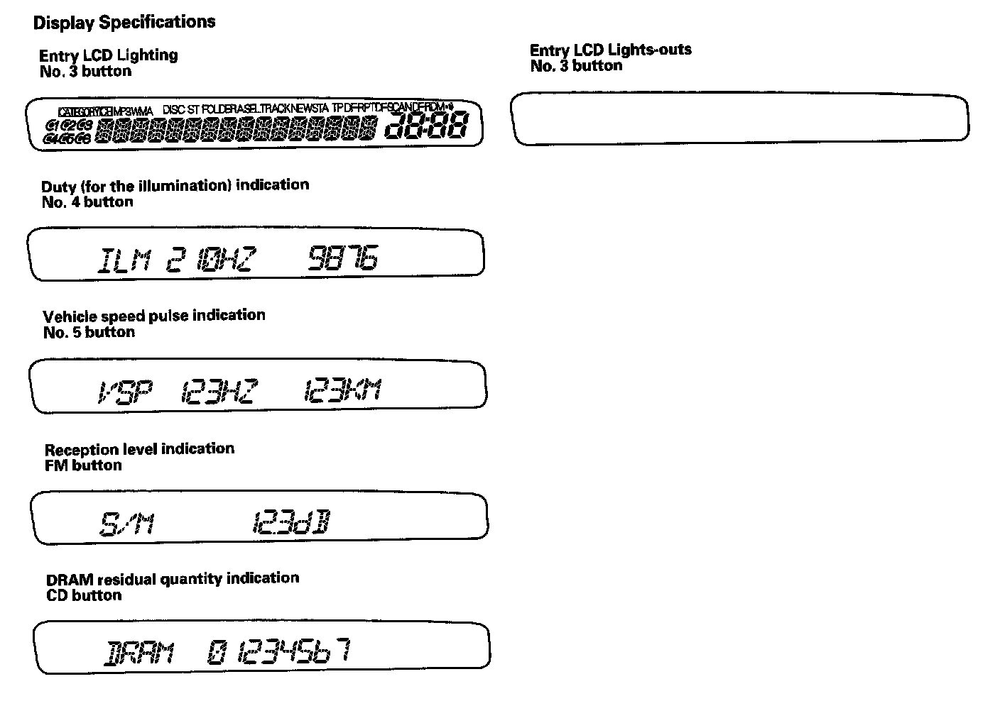

Initial Inspection and Diagnostic Overview
Self-diagnostic FunctionWithout Navigation
The audio system has a self-diagnostic function. To run the self-diagnostic function, do the following:
How to check for audio system condition
NOTE: The audio unit must be in the code enter screen before performing the self-diagnostic function.
1. Turn the ignition switch to the ACC (I) or ON (II) position.

2. Push and hold the "No.1" and "No.6" buttons. While holding the buttons, push the "VOL push PWR" knob (A) to ON. Release the buttons and the self-diagnostic function will begin.
3. By pressing a preset button, the input will trigger the diagnostic mode that is assigned to that preset switch.
"No.3" button
Entire LCD lighting/light-out mode: Turns on/off the entire LCD to show the presence or absence of an LCD failure.
"No.4" button
Duty (for the Illumination dim) indication mode: Indicates the duty for the Illumination dim.
"No.5" button
Vehicle speed pulse indication mode: Indicates the vehicle speed pulse.
"FM" button (Push and hold 5 sec.)
Reception level check mode: Indicates the reception level. When entering the reception level check mode, the AM/FM button is used to change the main/sub antenna.
"CD" button (Push and hold 5 sec.)
DRAM residual quantity indication mode: Indicates the DRAM residual quantity.

4. The self-diagnostic function will end when the audio unit is turned off, or the ignition switch is turned off.
Speaker check mode
5. Turn off the audio unit.
6. Push and hold the "No.1" and "No.3" buttons. While holding the buttons, push the "VOL push PWR" knob to ON. Release the buttons and the speaker check mode will begin. A low-frequency hum should sound for about one minute. Change the test speaker by push the "SKIP" button. If you find a speakers) with no sound, check the speaker and harness connections. If the connections are good, replace the speaker and retest.
7. The self-diagnostic function will end when the audio unit is turned off, or the ignition switch is turned off.